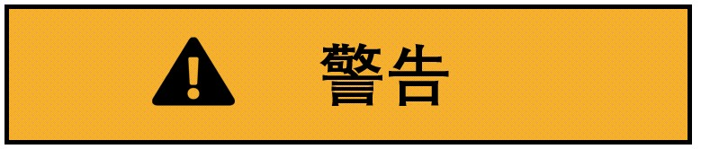
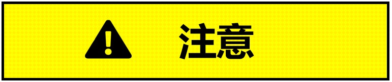

安全说明
安全章节
'安全'章节描述了机器的安全理念。它规定了防护装置和制造商为安全操作机器所采取的设计措施。它指出运输机器时的危险，并规定用户为避免可能危险所采取的措施。'危险'章节基于制造商的风险评估，描述了剩余风险。用户必须采取措施防止这些危险。这些措施必须符合机器运行所在国家的国家安全和事故预防法规。
警告标志和信息牌
机器上的危险点用警告标志和信息牌标记。
警告
本操作手册包含警告，警示危险并规定避免这些危险的措施。
警告具有以下结构：
-
信号词表示危险的程度。
-
危险描述说明危险及若不注意危险可能造成的后果。
-
预防危险的措施已规划。
警告示例：

因坠落负载导致致命伤害的风险！
-
遵守运输重物的安全规定。
-
切勿在悬挂负载下行走。
-
使用认证的起重能力和足够尺寸的运输工具。
-
雇佣合格人员运输机器。
-
按照运输规定进行运输。
警告通知包括以下警告：
| 信号词 | 标签 | 描述 |
|---|---|---|
危险 |
|
如果未能防止危险情况，将导致死亡或严重伤害。 |
警告 |
 |
如果未能防止危险情况，可能导致死亡或严重伤害。 |
注意 |
 |
如果未能防止危险情况，可能导致轻微或中度伤害。 |
提示 |
|
如果未能防止危险情况，可能导致财产损失。 |